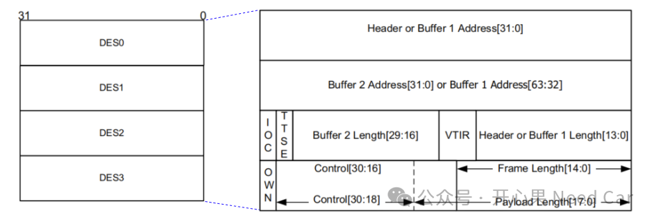
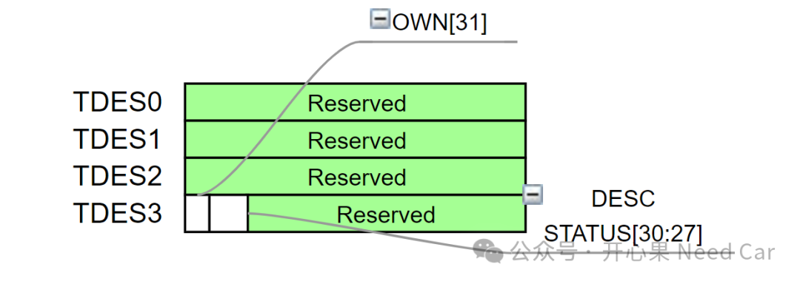
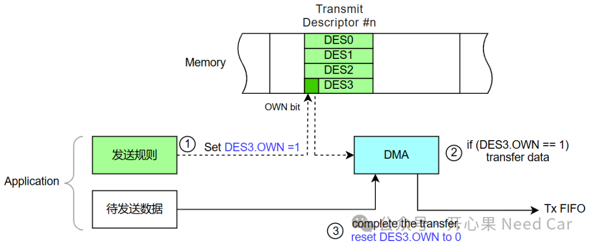
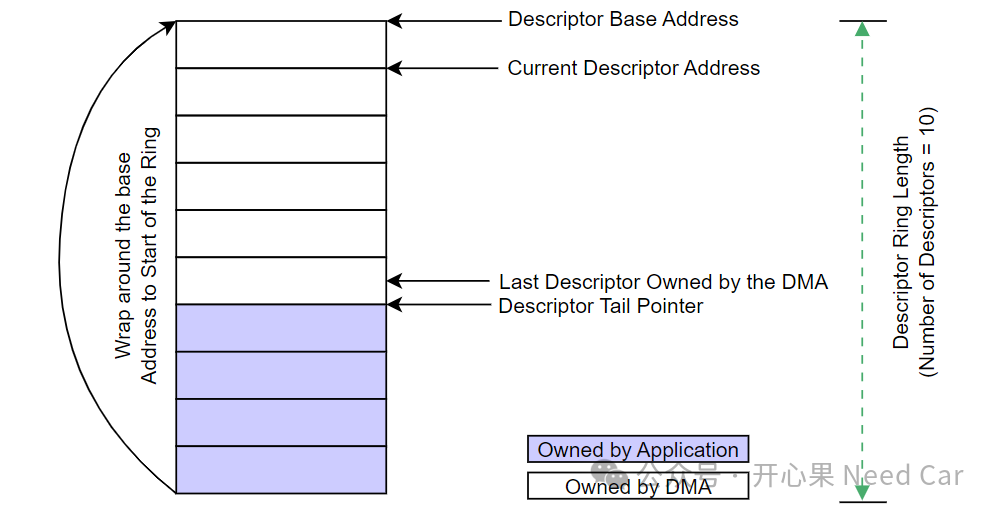
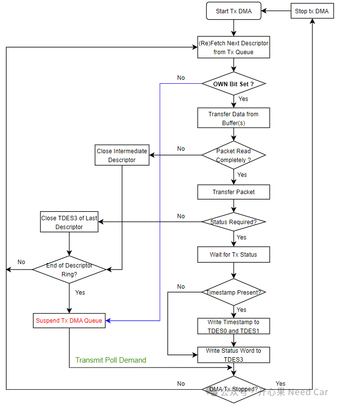
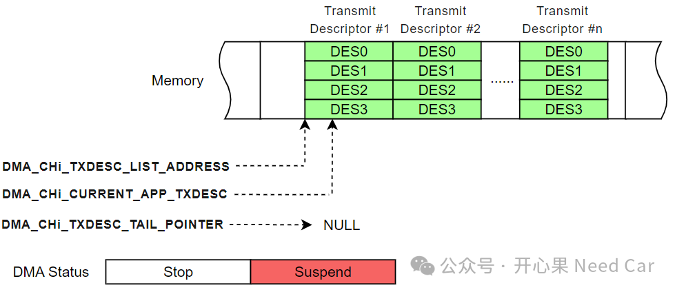
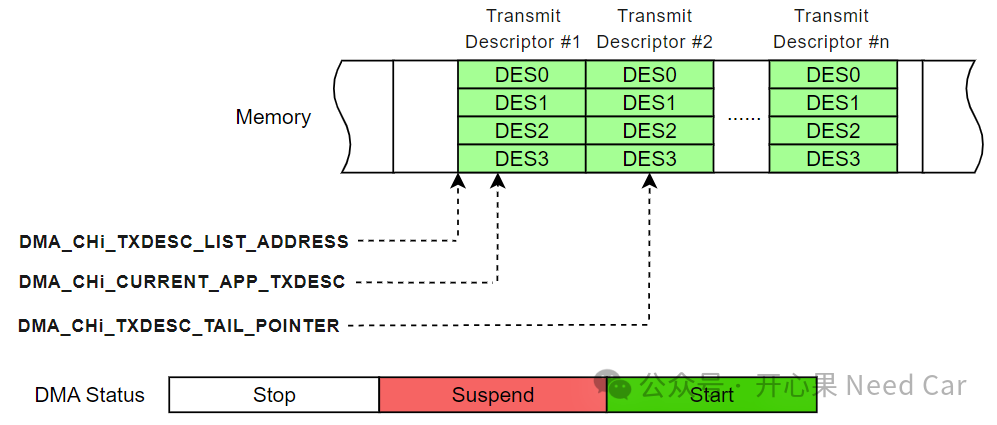
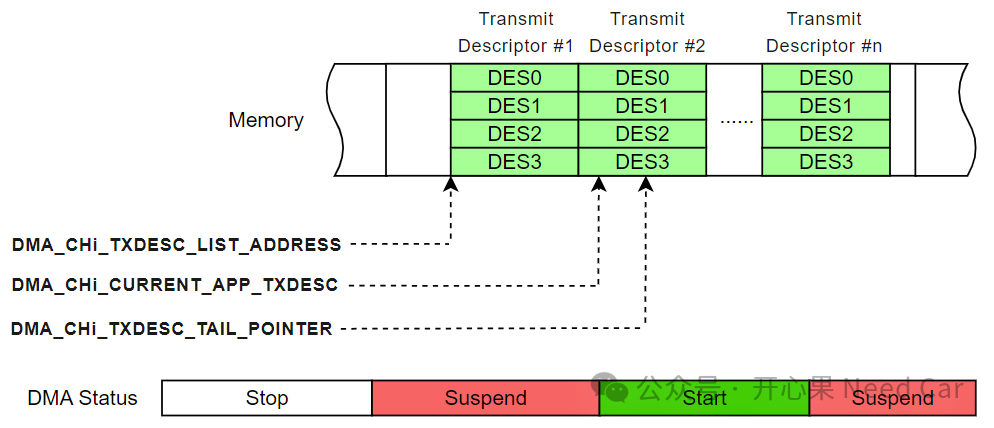

相对于其他总线，以太网的知识庞杂，当然，可获取的资料也丰富。以太网的知识从驱动层到上层协议栈，很难一下消化，所以，不妨从点开始，不断地拓展和链接，从而形成完整地以太网知识框架，进而更好地解决工程问题。本文，从通信出发，聊一聊以太网发送描述符（Transmit Descriptor）。我们知道：相比与CAN、Lin等总线，以太网的数据吞吐量比较大，eg：1500bytes。如果让CPU干数据搬运工作，尤其大量数据搬运工作，这有点"屈才"。所以，系统设计中，为了最大程度的释放CPU，在以太网的数据搬运中，会使用专门的DMA（Direct Memory Access）搬运。如果想让DMA知道如何搬运数据，就需要提前告知其搬运规则，因此，描述符（Descriptor）应用而生。对于以太网数据发送，则使用Transmit Descriptor描述以太网数据的发送规则。Transmit Descriptor有两种格式：Read格式和Write-Back格式。Transmit Descriptor Read Format如下所示：

如上图，在进行数据发送时，需要注意字节序（单片机一般是小端模式），而如上的描述符可能需要大端处理。
Transmit Normal Descriptor (Write-Back Format)，示意如下：

当DMA完成数据搬运以后，会对描述符进行写回操作，主要操作TDES3的OWN和DESC STATUS位域，将发送状态反馈给Application。
描述符是Application与DMA之间的纽带，Application通过描述符将待发送的信息填充到Transmit Descriptor中，DMA通过判断DES3.OWN获取发送请求。即：Application需要发送数据时，将数据地址放入Buffer1（对应DES0），同时，将一些控制信息写入可用的Transmit Descriptor中，最后，设置DES3.OWN = 1，请求DMA发送数据，这一步可以看作：Application将操作后的发送描述符控制权交给DMA；当DMA发送完数据以后，将对应发送描述符的DES3.OWN复位（=0），这一步可以看作：DMA将目标描述符的控制权返还给Application。通过DES3.OWN，Application与DMA进行交流，也就是"握手"动作，进而保证数据有序交互，示意如下：

DMA发送完成或者接收完成，一般会有中断触发，如果有特殊操作，也可以在中断回调函数中处理。
实际使用中，常常使用环形DMA描述符结构（DMA Descriptor Ring），示意如下：

如上结构，大家并不陌生。这里，我们需要注意一些细节。
当使用多个描述符时，描述符之间可以设置间隔（eg：DMA_Ch(#i)_Control寄存器的DSL位域，Descriptor Skip Length）。间隔设置多少需要根据手册要求，本文可以设置的数据间隔：DWord（8 byte）的整数倍，如果DSL = 0，则意味着描述符间没有间隔。理解以太网发送，还需要理解与描述符操作相关的寄存器。本文聚焦发送相关的几个DMA寄存器：
DMA_CHi_TXDESC_LIST_ADDRESS：发送描述符的基地址，指向发送描述符链表的第一个描述符，初始化时赋值；
DMA_CHi_CURRENT_APP_TXDESC：当前发送描述符，指向DMA当前可用的描述符；
DMA_CHi_TXDESC_RING_LENGTH：存放发送描述符长度，可使用长度 = n + 1（n是寄存器中存储的实际值）；
DMA_CHi_TXDESC_TAIL_POINTER：发送描述符尾指针，每次请求发送以太网Frame后，需要Application更新Transmit Descriptor地址，即：指向下一个可用的空闲描述符地址。
如果Current Descriptor Pointer == Descriptor Tail Pointer，则DMA会自动挂起(Suspend)，停止数据搬运。当Application再次请求数据发送时，需要向Descriptor Tail Pointer中写入发送信息，偏移Descriptor Tail Pointer，使其满足：Current Descriptor Pointer < Descriptor Tail Pointer。如果Descriptor Tail Pointer偏移到尾部，则重新回到Descriptor Base Address。
以太网Frame的发送流程，示意如下：

1、Application通过DMA_CHi_CURRENT_APP_TXDESC寄存器获取当前可用的发送描述符地址，将发送信息填充到可用的发送描述符中，即：告知DMA搬运规则。之后，Application将TDES3.OWN置位（=1），请求发送数据；2、DMA能否搬运数据，需要判断DMA的工作模式，如果DMA处于Stop模式，需要重新启动DMA。通过判断DMA_CHj_Status (j=0-7)的TPS（Transmit Process Stopped）位域确认其是否处于Stop模式。具体描述：如果TPS == 1，表示DMA处于Stop模式，需要向TPS位域写1清除，同时，进行DMA使能操作。当然，还可以进一步的检查其他信息，eg：TBU（Transmit Buffer Unavailable）；3、当Application将描述符的控制权交给DMA以后，还需要Transmit Poll Demand，即：向DMA_CHi_TXDESC_TAIL_POINTER寄存器写入信息，一般写入下一个可用发送描述符地址，让DMA脱离挂起状态，去查询待处理的发送描述符信息；4、当DMA发送完数据以后，DMA_CHi_CURRENT_APP_TXDESC寄存器的发送描述符地址自动偏移一个，如果Current Descriptor Pointer < Descriptor Tail Pointer，DMA继续发送数据；如果Current Descriptor Pointer == Descriptor Tail Pointer，DMA随即挂起(Suspend)，停止数据搬运，同时，数据的发送状态回写（write-back）到TDES3中。
数据的发送流程关键步骤如上，理解了数据发送，也就不难理解数据的接收过程。
（一）DMA状态变化流程
1、以太网专用DMA初始化以后，如果没有数据发送，进入Suspend状态。此时，DMA_CHi_TXDESC_TAIL_POINTER指向空，示意如下：

2、Application请求发送数据时，从DMA_CHi_CURRENT_APP_TXDESC寄存器获取可用的发送描述符地址，填充发送规则。向DMA_CHi_TXDESC_TAIL_POINTER寄存器写入下一个可用描述符地址，使其满足Current Descriptor Pointer < Descriptor Tail Pointer，即：触发DMA发送，示意如下：
3、Frame发送完成以后，DMA_CHi_CURRENT_APP_TXDESC寄存器中的可用描述符地址，自动向后偏移一个，使得Current Descriptor Pointer == Descriptor Tail Pointer，DMA随即挂起(Suspend)，示意如下：

点击下方关注，一起聊聊Autosar/嵌入式，如果需要，联系作者进群，给你更专业的解答